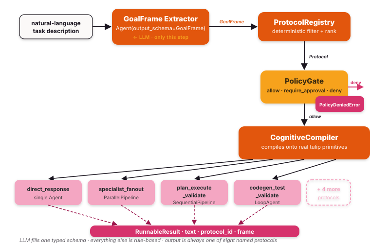

Router — pick the orchestration shape from a natural-language task¶
You hand the router a sentence like "Scan subnet 192.0.2.0/24 for the new CVE-2024-99999 exposure." It picks one of eight orchestration shapes — direct answer, plan-execute-validate pipeline, parallel specialist fan-out, debate, code-gen-with-tests loop, approval-gated execution, handoff chain, or remote A2A delegation — and runs that shape against your tools.
You describe what you want; the router decides how to coordinate
the agents. The LLM only fills a typed schema (a GoalFrame) — it
never authors the topology. Selection, ranking, and policy are pure
Python over that frame, so two identical requests always produce the
same shape.
Under the hood: tulip.router is a meta-orchestration layer on top of
Tulip's existing primitives. It
compiles the chosen shape onto a real Agent, SequentialPipeline,
ParallelPipeline, LoopAgent, or Orchestrator from the standard
toolkit. The contribution is the layer, not the primitives — every
router execution is just a normal SDK orchestration you can already
inspect, replay, and extend.
Why a routing layer¶
Frameworks tend to pick one extreme:
- LangGraph — you author the topology by hand. Predictable, but every new shape is more code.
- CrewAI / free-form agent swarms — the LLM picks the topology. As flexible as the model, as fragile as the model.
tulip.router splits the difference: the LLM produces only a typed
GoalFrame; the rest of the pipeline is rule-based. You get adaptive
routing without giving the model the steering wheel.
The five layers¶
A dispatch flows through five stages, in order: an LLM extractor reads
the prompt into a typed GoalFrame, the protocol registry picks the
matching shape, the policy gate decides whether the request is allowed
(and whether it needs approval), the compiler instantiates the real
SDK primitive, and the runnable executes. Every stage except the
first is pure Python.

1. GoalFrame — the typed contract¶
from tulip.router import Complexity, GoalFrame, Risk, TaskType
frame = GoalFrame(
primary_goal=TaskType.DIAGNOSE,
domain="vuln_management",
complexity=Complexity.HIGH,
risk=Risk.HIGH, # an active subnet scan touches production hosts
required_capabilities=["scan_subnet", "lookup_cve"],
)
The LLM extractor — a standard SDK
Agent(model=..., output_schema=GoalFrame) — fills exactly this
schema. It does not author orchestration topology.
2. Protocol Registry — typed selection¶
from tulip.router import ProtocolRegistry, builtin_protocols
protocols = ProtocolRegistry()
protocols.register_many(builtin_protocols())
chosen = protocols.select(frame, available_capabilities={"scan_subnet", "lookup_cve"})
# chosen.id == "specialist_fanout"
Selection filters on handles ∋ primary_goal,
risk_max ≥ frame.risk, and requires_capabilities ⊆ available,
then ranks candidates by complexity-fit + cost. It never asks the LLM.
3. CapabilityIndex — view over ToolRegistry¶
from tulip.router import CapabilityIndex
from tulip.tools.registry import create_registry
tools = create_registry(lookup_cve, scan_subnet, query_siem)
caps = CapabilityIndex(tools)
caps.annotate(
"scan_subnet",
tool_name="scan_subnet",
description="Active port + service scan across a CIDR range.",
domain="vuln_management",
)
The index is an overlay, not a parallel registry — the underlying
Tool still lives in ToolRegistry. Capabilities just add the
domain + risk metadata that the router needs.
4. PolicyGate — risk + approval¶
from tulip.router import PolicyGate, Risk
gate = PolicyGate(
max_risk=Risk.HIGH, # nothing above HIGH allowed
require_approval_above=Risk.MEDIUM, # HIGH-risk frames need approval
)
verdict = gate.check(frame, chosen)
# verdict.allow / verdict.require_approval / verdict.reason
The gate produces one of three verdicts. With this config a HIGH-risk
scan_subnet frame is allowed but flagged for approval, while a LOW-risk
"Summarise the latest advisory for CVE-2024-99999" frame runs straight
through. Approval-flagged runnables are wrapped with a callback that the
workbench's interrupt UI (or your own approval flow) can drive.
5. CognitiveCompiler — composition, not codegen¶
from tulip.router import CognitiveCompiler, Router
compiler = CognitiveCompiler(
protocols=protocols,
capabilities=caps,
policy=gate,
model=model,
)
router = Router(extractor=extractor, compiler=compiler)
result = await router.dispatch("Scan subnet 192.0.2.0/24 for CVE-2024-99999.")
print(result.protocol_id, result.text)
The compiler instantiates a real SDK primitive and wraps it in a
Runnable adapter so call sites get a single shape
(async execute(task) -> RunnableResult) regardless of which protocol
fired.
Built-in protocols¶
The eight builtins span the cardinal orchestration shapes.
primary_for (a strict subset of handles) names the task types each
protocol is the canonical choice for — that flag breaks ties in
the registry's ranking.
Protocol.id |
Compiled shape | handles |
primary_for |
|---|---|---|---|
direct_response |
Agent (single call) |
ANSWER, EXPLAIN, RESEARCH |
ANSWER, EXPLAIN |
plan_execute_validate |
SequentialPipeline([planner, executor, validator]) |
PLAN, BUILD, MODIFY, GENERATE_CODE, REMEDIATE |
PLAN, BUILD, MODIFY |
specialist_fanout |
ParallelPipeline of N tool-bound Agents |
DIAGNOSE, COMPARE, MONITOR, COORDINATE, RESEARCH |
DIAGNOSE, MONITOR, RESEARCH |
debate |
ParallelPipeline of 2 debaters + a judge Agent |
COMPARE, RESEARCH |
COMPARE |
codegen_test_validate |
LoopAgent (stops on PASS) |
GENERATE_CODE, BUILD |
GENERATE_CODE |
approval_gated_execution |
Single Agent wrapped in an approval interrupt |
REMEDIATE, MODIFY, ESCALATE |
ESCALATE, REMEDIATE |
a2a_delegate |
A2AClient.invoke against a remote endpoint |
COORDINATE, ESCALATE |
(opt-in only) |
handoff_chain |
SequentialPipeline of one-tool Agents |
PLAN, RESEARCH, COORDINATE |
COORDINATE |
Note: the specialist_fanout and handoff_chain builders use real
Agent instances (not the native Specialist / HandoffAgent)
because those primitives execute a single model.complete() and don't
loop on tool calls — so models that say "I'll call the tool" never
actually invoke it. The Agent loop runs the full tool cycle.
Ranking — how the registry picks one protocol¶
Filtering by handles and risk_max usually leaves several protocols
on the table. The registry then ranks them on four signals — lower
wins at each — and picks the first survivor. The intuition: prefer a
protocol whose cost matches the request's complexity, prefer one
that's canonical for the goal type, prefer cheaper over more
expensive, and break ties on specificity.
_rank_key layers the four signals (lower wins each layer):
- Distance — how close the protocol's
costmatchesframe.complexity. A LOW-complexity request never gets a HIGH-cost protocol just because that protocol claims to be canonical for the goal type. - Canonical —
0ifframe.primary_goal in protocol.primary_for, else1. Breaks distance ties: when two protocols both fit the complexity, the one designed for the specific goal wins. - Cost — lower-cost protocols win at the next tier.
- Handles count — fewer = more specific; final tiebreaker.
Emergent picker — opt-in second mode¶
The default ranker is rule-based and deterministic. When the rule
hierarchy doesn't capture your deployment's actual fit — typically
when you register custom protocols alongside the built-ins — pass an
LLMProtocolPicker to the compiler and the model picks the
protocol instead.
from tulip.router import (
CognitiveCompiler, LLMProtocolPicker, PolicyGate, ProtocolRegistry,
builtin_protocols, CapabilityIndex,
)
picker = LLMProtocolPicker(model=model)
compiler = CognitiveCompiler(
protocols=registry,
capabilities=capabilities,
policy=PolicyGate(),
model=model,
protocol_picker=picker, # opt-in — default is None (rule-based)
)
The picker is strictly scoped to the disambiguation step. The compiler still:
- Filters candidates by
handles,risk_max, andrequires_capabilitiesbefore the picker sees anything — the model never picks an ineligible protocol. - Short-circuits when one candidate survives — no LLM call.
- Falls back to
_rank_keyif the picker raises or returns an unknown id; emitsrouter.protocol.picker_fallbackso the degradation is observable. Emergent mode never reduces availability. - Runs PolicyGate after the pick. Same risk/approval gating regardless of who picked.
Every router.protocol.selected event carries a method field
identifying which path produced the pick:
method |
When |
|---|---|
"rule_based" |
Default _rank_key path (picker not configured) |
"single_candidate" |
One candidate survived filtering; picker bypassed |
"llm_picked" |
Picker resolved the disambiguation; rationale field populated |
"rule_based_fallback" |
Picker raised or hallucinated; _rank_key resolved it |
See notebook 59 for a runnable side-by-side comparison.
Skills integration¶
Skills (SKILL.md packages following the
AgentSkills.io spec) attach to every Agent
the compiler emits, scoped to frame.domain. The agent's
SkillsPlugin does the L1 / L2 / L3 progressive disclosure at
runtime — the catalog appears in the system prompt; the agent calls
the skills tool to load full instructions.
from tulip.router import SkillIndex
from tulip.skills import Skill
skills = SkillIndex()
for s in Skill.from_directory("./examples/skills"):
# Tag each skill with the domain it applies to. Skills registered
# without a domain ("global") appear in every domain's catalog.
skills.register(s, domain=s.metadata.get("domain", ""))
compiler = CognitiveCompiler(
protocols=protocols,
capabilities=caps,
policy=gate,
model=model,
skills=skills,
)
When a user dispatches a request with domain="vuln_management", every
emitted Agent (planner / executor / validator for
plan_execute_validate; each fan-out leg for specialist_fanout;
etc.) sees the vuln-management-tagged skills catalog and can activate
any one of them on demand.
A2A delegation¶
a2a_delegate is the only builtin protocol that's opt-in only:
its primary_for list is empty, so the registry never picks it
canonically. To enable it, configure the remote endpoint at compile
time:
compiler = CognitiveCompiler(
protocols=protocols,
capabilities=caps,
policy=gate,
model=model,
a2a_endpoint="https://remote-agent.example.com",
)
The compiler passes the endpoint into BuilderContext; the builder
constructs an A2AClient and wraps it in an A2ARunnable. Without an
endpoint, picking the protocol raises RuntimeError — the registry
won't reach that path under default ranking.
Custom protocols¶
Build your own by writing a builder function and registering it:
from tulip.router import Protocol, TaskType, Risk
def _my_builder(frame, capabilities, ctx):
... # return a Runnable
return wrap_pipeline(my_pipeline, "my_protocol", frame)
protocols.register(
Protocol(
id="my_protocol",
description="...",
handles=[TaskType.RESEARCH],
risk_max=Risk.MEDIUM,
builder=_my_builder,
)
)
The same Router instance can serve multiple domains (vuln management,
threat intel, SOC triage) by swapping CapabilityIndex content — protocols
themselves are domain-agnostic.
Error handling¶
Three exception types can propagate out of router.dispatch(). Handle
all three at the call site:
from tulip.router.runtime import FrameExtractionError
from tulip.router.protocol import NoMatchingProtocolError
from tulip.router.policy import PolicyDeniedError
try:
result = await router.dispatch(user_input)
except FrameExtractionError as e:
# The extractor's output failed GoalFrame schema validation.
# Retry with a better system prompt or a stricter model.
logger.warning("frame extraction failed: %s", e)
except NoMatchingProtocolError as e:
# No protocol in the registry survived the filter pass
# (handles ∌ primary_goal, risk_max too low, or missing capabilities).
# Register a new protocol or broaden an existing one.
logger.warning("no matching protocol: %s", e)
except PolicyDeniedError as e:
# The PolicyGate returned `deny` — frame.risk exceeded max_risk.
# Escalate to a human or reject the request.
logger.error("policy denied: %s", e)
Observability¶
Every router.dispatch() call emits a complete SSE trace on the in-process
EventBus when a run_context is active. Subscribe before dispatching to
watch the full pipeline in real time:
from tulip.observability import run_context, get_event_bus
async with run_context() as rid:
sub = asyncio.create_task(_print_events(rid))
result = await router.dispatch("Scan subnet 192.0.2.0/24 for CVE-2024-99999.")
await sub
async def _print_events(rid):
async for event in get_event_bus().subscribe(rid):
print(f"{event.event_type}: {event.data}")
Events emitted (in order):
event_type |
When |
|---|---|
router.frame.extracted |
GoalFrame extracted successfully |
router.frame.failed |
Schema validation failed |
router.protocol.selected |
Registry picked a protocol |
router.protocol.no_match |
No protocol survived filter |
router.policy.verdict |
Gate returned allow / require_approval / deny |
router.runnable.compiled |
Compiler emitted a Runnable |
router.runnable.executing |
Runnable started |
router.runnable.executed |
Runnable finished successfully |
router.runnable.failed |
Runnable raised |
See SSE event catalogue for full payload field descriptions
(search for the router.* section).
See also¶
- Notebook:
examples/notebook_58_cognitive_router.py - SSE event catalogue —
router.*event payloads. - Observability —
run_context,EventBus, EventBusHook. - API reference:
tulip.router(GoalFrame,Protocol,ProtocolRegistry,PolicyGate,CognitiveCompiler,Router,RunnableResult).